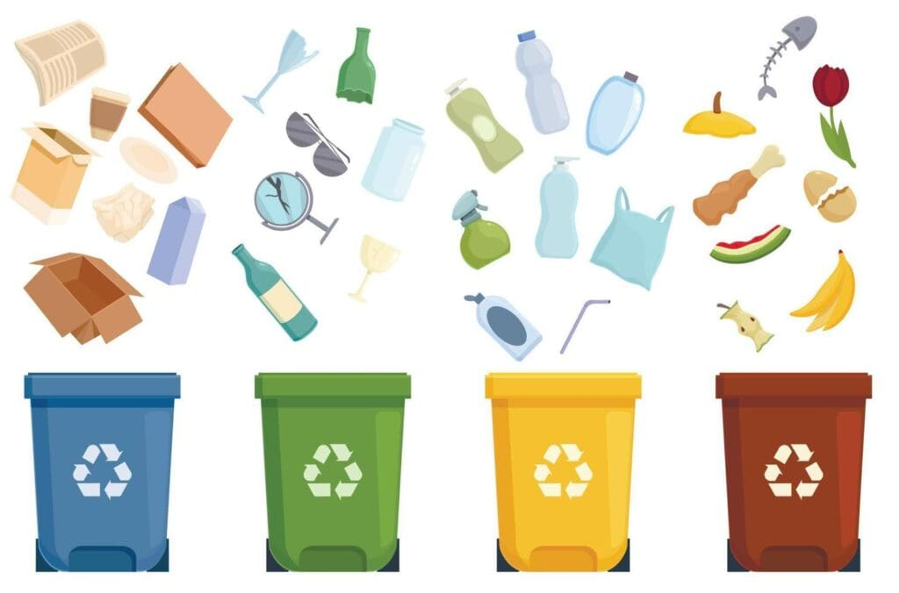

Separar para Transformar
Conscientização ambiental e cidadania em ação

♻️ Importância da Separação Correta dos Resíduos
• 🌍 Redução de Impactos Ambientais - Separar corretamente o lixo evita a poluição do solo, da água e do ar, além de reduzir o acúmulo de resíduos em áreas naturais e urbanas.
• 🔁 Aumento da Reciclagem e Reaproveitamento - Materiais recicláveis como papel, plástico, vidro e metal retornam ao ciclo produtivo, diminuindo a necessidade de extração de recursos naturais.
• 🏙️ Melhoria na Qualidade de Vida Urbana - Menos lixo nas ruas reduz enchentes, mau cheiro e proliferação de doenças, contribuindo para um ambiente mais limpo e saudável.
• 🧑🤝🧑 Geração de Renda e Inclusão Social - O material reciclável separado corretamente pode ser destinado a cooperativas e catadores, fortalecendo a economia local e promovendo dignidade no trabalho.
• 🗑️ Redução da Pressão sobre Aterros Sanitários - Menos lixo descartado como rejeito aumenta a vida útil dos aterros e reduz custos para os municípios com transporte e tratamento de resíduos.
• 🌱 Contribuição para a Sustentabilidade - A separação correta faz parte da economia circular e dos Objetivos de Desenvolvimento Sustentável (ODS), promovendo consumo responsável e preservação ambiental.
♻️ Tipos de resíduos e lixeiras
- Orgânico: restos de comida, cascas de frutas, folhas
- Papel: jornais, cadernos, embalagens de papel
- Plástico: garrafas PET, sacolas, tampas
- Vidro: garrafas, potes, frascos
- Metal: latas de alumínio, aço, tampinhas
🧠 Curiosidades
🔹 Uma lata de alumínio pode levar até 200 anos para se decompor, mas pode ser reciclada infinitamente!
🔹 O Brasil recicla menos de 4% do lixo coletado — mas isso pode mudar com educação e ação comunitária.
🎮 Jogo Educativo
Que tal aprender brincando? Clique no botão abaixo para jogar o simulador de separação de resíduos. Arraste os itens até a lixeira correta e descubra como pequenas atitudes fazem grande diferença!